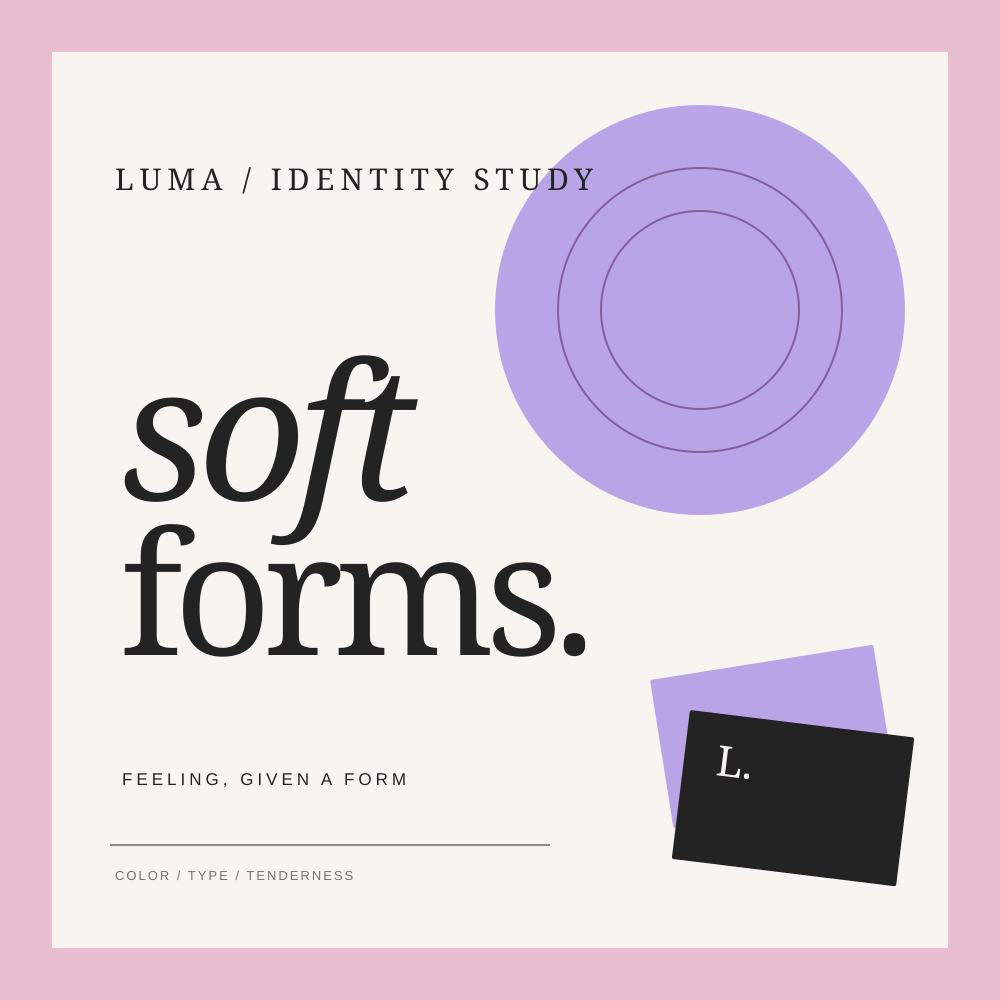

01 — IDENTITY STUDY↗Independent creative studio · Est. for ideas
We turn ideas into visual experiences.
Thoughtful branding, digital design, and creative direction for brands ready to stand out.
Small studio, wide point of view.
LS—001 VISUAL NOTES
a little
more
meaning.
more
meaning.
FORM / FEEL / FUNCTION
COMPOSED WITH INTENTION01 / A different kind of studio
Good work starts with a point of view.
We make the abstract feel tangible. Through considered identity systems and digital experiences, we help ambitious ideas find a voice, a shape, and a place in the world.
A little about us ↗02 / A few things we’ve been thinking about
Selected work
All featured projects are fictional concept studies, created to explore each brand world.
03 / What we bring to the table
Good thinking.
Beautifully made.
04 / A thoughtful way of working
From first thought
to finished feeling.
Not a formula. A shared process that gives good ideas enough room to become themselves.
Listen
We ask better questions, find the signal, and understand what matters.
Frame
We set a clear direction — the idea, the feeling, and the rules worth keeping.
Make
We explore, test, compose, and turn the thinking into something tangible.
Refine
We make the small decisions count and leave the work feeling considered.
Have a good idea sitting around?